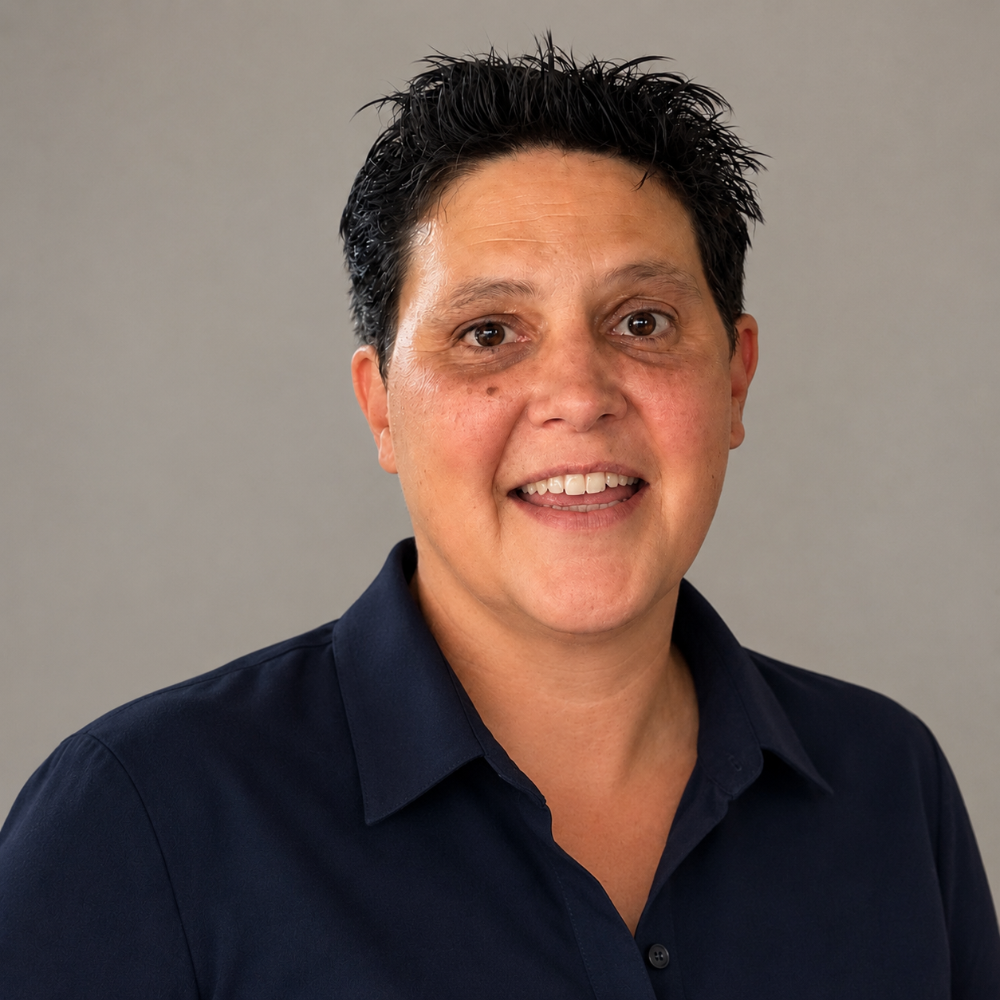

Présentation
Depuis 30 ans dans l'administration — dont 22 ans au sein d'une grande entreprise nationale — Katia connaît toutes les coulisses d'un bureau qui tourne rond. Elle met cette expérience au service de Mecadacty, son activité complémentaire, avec des disponibilités en soirée pour épauler indépendants et petites structures.
Un pic d'activité, un flux à remettre en ordre, un service interne débordé ? Katia prend le relais avec le sourire, pour que chacun puisse se concentrer sur son métier sans se soucier de son administratif.
Toujours le sourire aux lèvres, une énergie à revendre, et un travail livré dans les délais impartis — telle est sa philosophie.
L'activité — Secrétariat 3.0
Mecadacty, c'est du secrétariat 3.0 : votre partenaire du quotidien pour souffler sur toute la partie administrative — indépendants, TPE, PME — de la mission ponctuelle au soutien structurel, en toute discrétion.
Flexible, réactive et disponible en soirée, Mecadacty s'adapte au rythme de chaque client pour que l'administratif ne soit jamais un frein à l'activité.